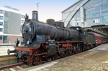

A Gőzmozdony a vasutakon első ízben használt géperejű vontatójármű, precízebben a gőzmozdony vontatott járművek (vasúti kocsik) továbbítására szolgáló vasúti vontatójármű.
Erőgépe egy gőzgép, amelynek működtetéséhez szükséges gőzt a jármű kazánjában állítják elő. A kazán fűtéséhez szükséges tüzelőanyagot (általában kőszén, ritkábban fa, vagy fűtőolaj) és a kazántápvizet a mozdony a járműre épített tartályokban (szertartályos gőzmozdony), vagy a mozdonyhoz kapcsolt külön szerkocsiban (szerkocsis gőzmozdony) viszi magával.
A kazánban termelt gőz energiáját a gépezet gőzhengerei alakítják mechanikai munkává.
